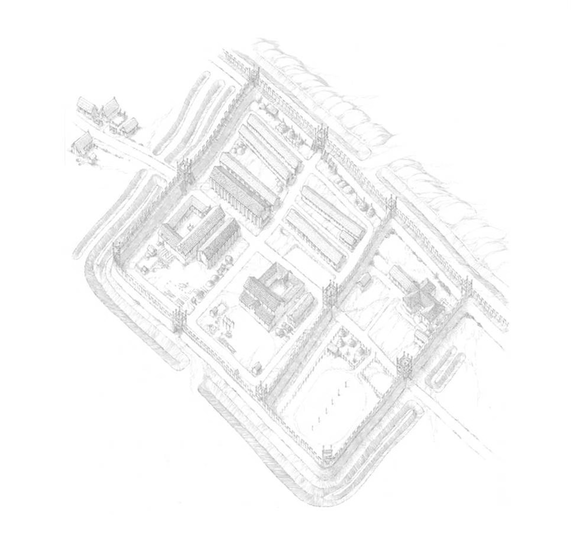
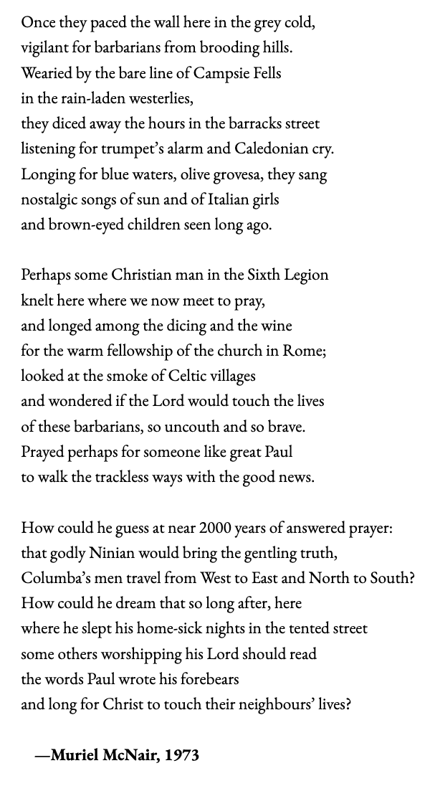

Roman Fort
Around 7 000 soldiers were stationed on the Antonine Wall. Although some soldiers came from Europe most were mainly recruited from Britain. There is no evidence for Scots in the Roman army. The soldiers could receive orders to travel from their fort to fight in other conflicts abroad. The Fort at Bearsden was only inhabited for 20 years.
Living on the forts alongside the soldiers were wives, children and slaves of the commanding officers. Being a soldier was a good job. The life expectancy of a soldier was better than a civilian and they could retire at 50.

The Principia (headquarters) is the most important building in any Roman fort. It was the administrative and religious centre of the fort. It was situated at the centre of the fort where the via praetoria (the road from the headquarters to the main gate) and the via principalis (the main street running past the headquarters) crossed.
The Principia is laid out in a square with three wings around a parade ground, and a gate on the south side. The north wing consisted of three rooms. The central room was the sacellum, the regimental shrine, which served as a focal point of the headquarters. The standards of the units were kept here. In the centre of the room was a sunken pit, which acted as a ‘strong room’ for the regimental pay chest. The money was kept here to deter thieves who would be committing sacrilege if they stole from the shrine. The standard bearers acted as treasurers of these funds keeping track of what money was paid in and out. The rooms to either side of the sacellum were probably used by pay and records clerks.
The two side wings of the Principia building housed long rooms, which were probably armouries.
Excavations have revealed that the fort and annexe at Bearsden is perhaps the most unusual major site along the entire wall. Both fort and wall lie within a single enclosure system (3.6 acres). There is a turf rampart on a 4.3m wide stone base and ditches running around the whole site.
The Antonine Wall ran behind the bathhouse. It was really a big ditch with the earth thrown outside to make an outer mound. On the Roman side of the ditch, layers of cut turves were stacked high to make another mound. On top of this was a timber rampart to protect the soldiers. Behind the rampart was the main road, called the Military Way. The military way is now Roman Road. Roman roads were made of cobbles surfaced with gravel and crushed sandstone
Roman Food
Granaries were an important feature of all Roman forts. They housed the grain for the troops and fodder for the horses. Each fort was supposed to hold a year’s supply of food in case it fell under siege. Granaries had raised floors to keep the food dry and fresh.
At Bearsden, the only buildings not made of timber within the fort were two stone granaries. There is evidence to suggest that at least on one of the structures the roof was made of tiles. The total floor area of the granaries was 105.4m². This means that between them they could have provided grain to feed nearly 400 men! This however doesn't include what would have been needed for the horses.
Romans loved their food. On the Antonine Wall, they received deliveries of olive oil, wine, spice and wheat from as far away as Spain and Germany. Their diet was mainly plant based. Two different types of wheat have been found at Bearsden. Spelt for baking bread and emmer for making porridge. Residues in pots also showed evidence of durum wheat, which could have been used for making pasta. There was no communal canteen. Soldiers prepared, cooked and ate in their barrack rooms. They ate their food out of pottery bowls using their fingers.
Here at Bearsden, soldiers were cooking on braziers (little portable cookers) and with casserole dishes that were north African in style. They cooked and ate communally, helping one another and sha-ring both resources and work.
Woodland Sounds
As you walk through the trees in our gardens, listen for the sounds of soldiers training, of traders selling their goods, of children running around. We had great fun researching and recording it and hope you enjoy listening to it.
Roman Flowers and Fauna
The study of the environmental evidence found during the excavations at Bearsden was hugely important and ahead of its time.
Lots of different species were identified as growing in and around the fort and reflected a mixed landscape of woodland, pasture, heath and bog.
There were alder and hazel trees, some willow, and grass, heather and rushes, corn marigold, common mallow, tormentil, wild strawberries, violets and buttercups. The church and wider community was inspired by this research to create drawings of many of these plants that you can see in the gardens around the church. We’ve divided the drawings below into cultivated plants, imported plants, surroundings and trees.
Roman Faith

The religious life of the people of ancient Rome featured a variety of beliefs and practices. Many gods and goddesses such as Mars, Neptune, Apollo or Diana, were worshipped and variety of sacrifices was made to them. A calendar might have told you which rituals and sacrifices to make on each day. These might include wheat or grain garlands, grapes and first fruits or a pig. Only wealthier Romans could afford this.
In houses individuals or families might partake of such practices. Larger group worship might take place in a temple or outdoor area and army units regularly would participate in religious activity centred on the god or emperor their regiment identified with. These were particularly important before going into battle or a long march.
Romans were free to worship many deities in many ways and were known to incorporate the religious practices of those they had conquered. Spoken prayer was seen as having a special significance. Appeals to deities such as Fortune or Health were made in attempts to improve their lives or make them safer.
In chapter 10 of the book of Acts (Acts 10) in the New Testament, written around 80 AD, we read of a Roman centurion, Cornelius. Unlike most of his contemporaries, he worshipped and prayed to, only one God, the Jewish God Yahweh. Acting on a vision of an angel, Cornelius arranged a meeting with the apostle Peter. From Peter he learned about Jesus and on hearing about His life, death and resurrection, became a believer in Jesus as the Son of God and was baptised into the Christian faith.
Cornelius lived more than two centuries before Emperor Constantine made Christianity the official religion of the Roman Empire and four centuries before Augustine began the first organized mission to Britain. In the 1st Century AD, there wasn’t an organised attempt to convert the British. It began when Roman artisans and traders arriving in Britain spread the story of Jesus along with stories of their Pagan deities. Could individual Christians in the Roman Army have shared some of their faith with the local people living in and around Bearsden in the second century AD? Maybe even the descendants of Cornelius were among them…
Polycarp (AD 155) was the Bishop of Smyrna (now in modern-day Turkey) he refused to burn incense to a statue of Caesar and as a result became a martyr. In our woodland sound sculpture you will notice a reference to Maximus doing something similar. Calling Jesus Lord and Saviour rather than Caesar was seen as direct assault on the authority of Rome and not tolerated.
Granary Garden
Granaries were an important feature of all Roman forts. They housed the grain for the troops and fodder for the horses. Each fort was supposed to hold a year's supply of food in case it fell under siege. Granaries had raised floors to keep the food dry and fresh.
At Bearsden the only buildings not made of timber within the fort were two stone granaries. There is evidence to suggest that at least on one of the structures the roof was made of tiles. The total floor area of the granaries was 105.4m (squared). This means that between them they could have provided grain to feed nearly 400 men! This however doesn't include what would have been needed for the horses.
Romans loved their food. On the Antonine Wall, they received deliveries of olive oil, wine, spice and wheat from as far away as Spain and Germany. Their diet was mainly plant based. Two different types of wheat have been found at Bearsden. Spelt for baking bread and emmer for making porridge. Residues in pots also showed evidence of durum wheat, which could have been used for making pasta. There was no communal canteen. Soldiers prepared, cooked and ate in their barrack rooms. They ate their food out of pottery bowls using their fingers. Recipe for scotch broth/pottage…